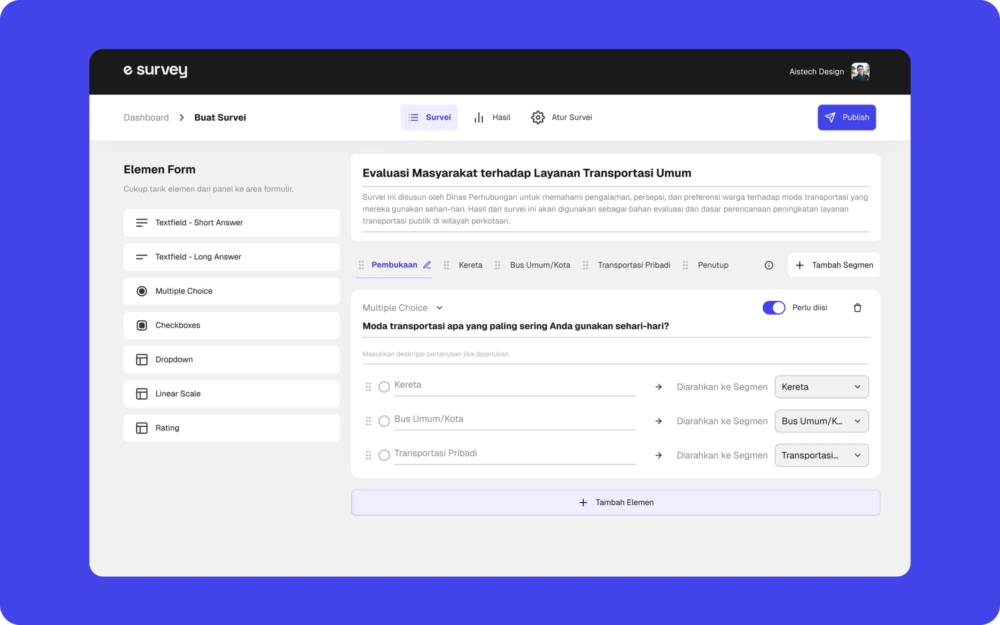
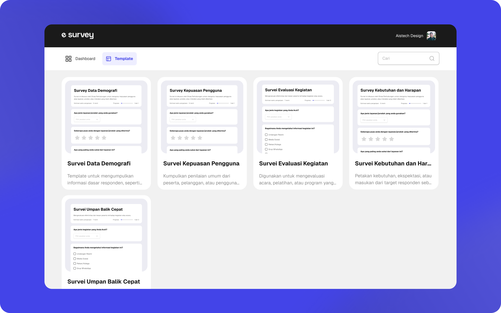
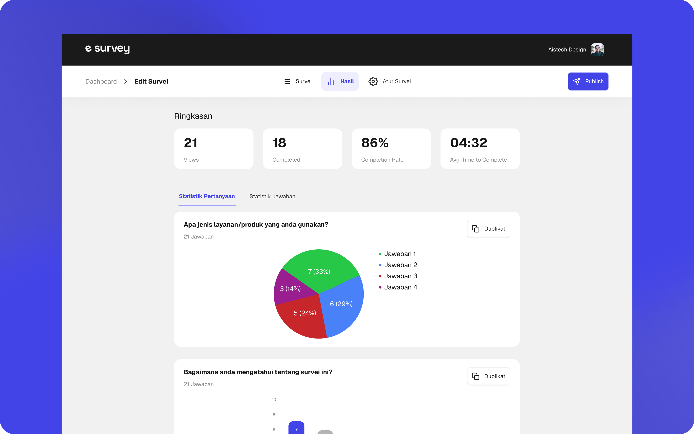

Aistech: Custom Survey Platform Extending Google Forms' Flexibility for Government Agencies

Client
This was an Aistech product exploration proposed for Dinas Perhubungan (the local Department of Transportation), aimed at reducing their dependency on Google Forms for survey needs.
Problem
Dinas Perhubungan wanted a survey platform of their own instead of relying on Google Forms. The need itself was simple and specific.
Process
Rather than treating this as a routine rebuild, I studied Google Form's interaction patterns closely and built on top of them, enhancing flexibility and customization well beyond what Google Forms offered. The result was an eSurvey product with meaningfully more capability than the tool it was meant to replace.
Outcome
A More Flexible Alternative to Google Forms, Design Complete
Delivered a fully designed eSurvey platform that built on Google Form's familiar patterns while extending far past its customization limits. The project was paused when Dinas Perhubungan, the proposing party, pulled back due to a government budget efficiency cut, not from any issue with the product itself.

